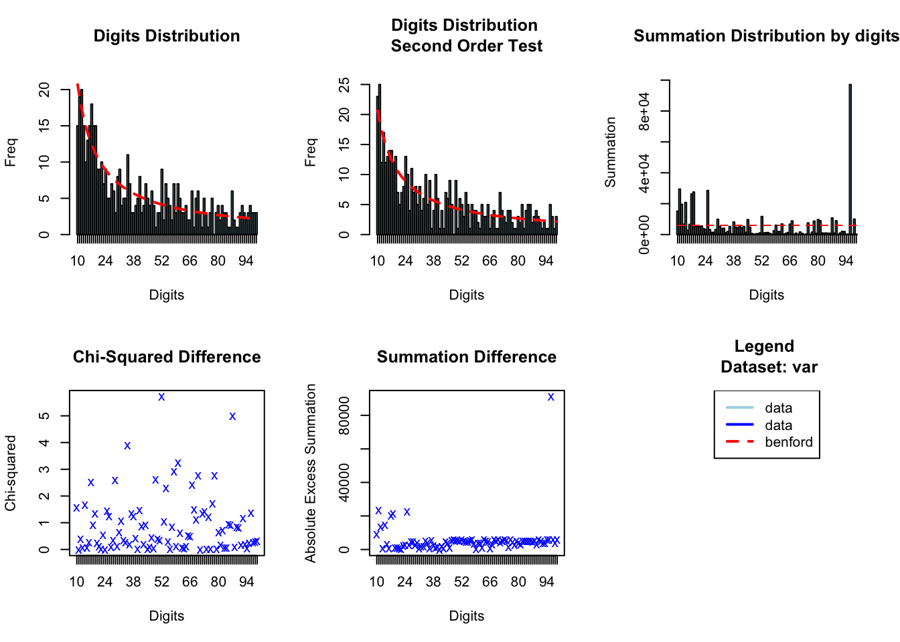

# Create a sample data frame of payment amounts
# These values are designed to roughly follow Benford's Law.
set.seed(123)
payments <- data.frame(
amount = rlnorm(500, meanlog = 5, sdlog = 2)
)
# View the first few rows
head(payments)
#> amount
#> 1 48.37817
#> 2 93.65755
#> 3 3352.34918
#> 4 170.88944
#> 5 192.20749
#> 6 4583.09574Vignette: Checking Data Authenticity with Benford’s Law
2025-06-30
Source:vignettes/clinicopath-descriptives-04-benford.qmd
# This code simulates how the jamovi module would be called in an R environment.
# You would need the ClinicoPathDescriptives package installed.
# Load the library
library(ClinicoPath)
#> Registered S3 method overwritten by 'future':
#> method from
#> all.equal.connection parallelly
#> Warning: replacing previous import 'dplyr::select' by 'jmvcore::select' when
#> loading 'ClinicoPath'
#> Warning: replacing previous import 'cutpointr::roc' by 'pROC::roc' when loading
#> 'ClinicoPath'
#> Warning: replacing previous import 'cutpointr::auc' by 'pROC::auc' when loading
#> 'ClinicoPath'
#> Warning: replacing previous import 'magrittr::extract' by 'tidyr::extract' when
#> loading 'ClinicoPath'
#> Warning in check_dep_version(): ABI version mismatch:
#> lme4 was built with Matrix ABI version 1
#> Current Matrix ABI version is 0
#> Please re-install lme4 from source or restore original 'Matrix' package
#> Warning: replacing previous import 'jmvcore::select' by 'dplyr::select' when
#> loading 'ClinicoPath'
#> Registered S3 methods overwritten by 'ggpp':
#> method from
#> heightDetails.titleGrob ggplot2
#> widthDetails.titleGrob ggplot2
#> Warning: replacing previous import 'DataExplorer::plot_histogram' by
#> 'grafify::plot_histogram' when loading 'ClinicoPath'
#> Warning: replacing previous import 'ROCR::plot' by 'graphics::plot' when
#> loading 'ClinicoPath'
#> Warning: replacing previous import 'dplyr::select' by 'jmvcore::select' when
#> loading 'ClinicoPath'
#> Warning: replacing previous import 'tibble::view' by 'summarytools::view' when
#> loading 'ClinicoPath'
# Run the Benford analysis
results <- benford(
data = payments,
var = "amount"
)
#>
|
| | 0%
|
|......................................................................| 100%
# View the results:
# 1. The main statistical analysis
print(results$text)
#>
#> Benford object:
#>
#> Data: var
#> Number of observations used = 500
#> Number of obs. for second order = 499
#> First digits analysed = 2
#>
#> Mantissa:
#>
#> Statistic Value
#> Mean 0.516
#> Var 0.086
#> Ex.Kurtosis -1.266
#> Skewness -0.041
#>
#>
#> The 5 largest deviations:
#>
#> digits absolute.diff
#> 1 10 5.70
#> 2 17 5.59
#> 3 14 4.98
#> 4 35 4.88
#> 5 52 4.86
#>
#> Stats:
#>
#> Pearson's Chi-squared test
#>
#> data: var
#> X-squared = 81.205, df = 89, p-value = 0.7095
#>
#>
#> Mantissa Arc Test
#>
#> data: var
#> L2 = 0.0016603, df = 2, p-value = 0.436
#>
#> Mean Absolute Deviation (MAD): 0.003480567
#> MAD Conformity - Nigrini (2012): Nonconformity
#> Distortion Factor: 0.9465649
#>
#> Remember: Real data will never conform perfectly to Benford's Law. You should not focus on p-values!
# 2. The list of suspicious data points
print(results$text2)
#> amount
#> <num>
#> 1: 170.889437
#> 2: 1716.707678
#> 3: 17.537695
#> 4: 17.399084
#> 5: 1082.477541
#> 6: 173.455607
#> 7: 1047.274939
#> 8: 10476.645262
#> 9: 17.696161
#> 10: 100.047814
#> 11: 175.822433
#> 12: 179.319128
#> 13: 10.787596
#> 14: 1745.771325
#> 15: 10.654344
#> 16: 102.940302
#> 17: 103.740938
#> 18: 177.859390
#> 19: 177.401309
#> 20: 1017.451181
#> 21: 172.276777
#> 22: 1760.494638
#> 23: 10.200650
#> 24: 1010.308244
#> 25: 103.563768
#> 26: 1.070583
#> 27: 17.992696
#> 28: 17942.095954
#> 29: 101.389182
#> 30: 17.204289
#> 31: 1.733296
#> 32: 1757.041881
#> 33: 10.528625
#> amount
# 3. The plot
print(results$plot)
#> $xlog
#> [1] FALSE
#>
#> $ylog
#> [1] FALSE
#>
#> $adj
#> [1] 0.5
#>
#> $ann
#> [1] TRUE
#>
#> $ask
#> [1] FALSE
#>
#> $bg
#> [1] "white"
#>
#> $bty
#> [1] "o"
#>
#> $cex
#> [1] 0.66
#>
#> $cex.axis
#> [1] 1
#>
#> $cex.lab
#> [1] 1
#>
#> $cex.main
#> [1] 1.2
#>
#> $cex.sub
#> [1] 1
#>
#> $col
#> [1] "black"
#>
#> $col.axis
#> [1] "black"
#>
#> $col.lab
#> [1] "black"
#>
#> $col.main
#> [1] "black"
#>
#> $col.sub
#> [1] "black"
#>
#> $crt
#> [1] 0
#>
#> $err
#> [1] 0
#>
#> $family
#> [1] ""
#>
#> $fg
#> [1] "black"
#>
#> $fig
#> [1] 0.6666667 1.0000000 0.0000000 0.5000000
#>
#> $fin
#> [1] 7 5
#>
#> $font
#> [1] 1
#>
#> $font.axis
#> [1] 1
#>
#> $font.lab
#> [1] 1
#>
#> $font.main
#> [1] 2
#>
#> $font.sub
#> [1] 1
#>
#> $lab
#> [1] 5 5 7
#>
#> $las
#> [1] 0
#>
#> $lend
#> [1] "round"
#>
#> $lheight
#> [1] 1
#>
#> $ljoin
#> [1] "round"
#>
#> $lmitre
#> [1] 10
#>
#> $lty
#> [1] "solid"
#>
#> $lwd
#> [1] 1
#>
#> $mai
#> [1] 1.02 0.82 0.82 0.42
#>
#> $mar
#> [1] 5.1 4.1 4.1 2.1
#>
#> $mex
#> [1] 1
#>
#> $mfcol
#> [1] 1 1
#>
#> $mfg
#> [1] 1 1 1 1
#>
#> $mfrow
#> [1] 1 1
#>
#> $mgp
#> [1] 3 1 0
#>
#> $mkh
#> [1] 0.001
#>
#> $new
#> [1] TRUE
#>
#> $oma
#> [1] 0 0 0 0
#>
#> $omd
#> [1] 0 1 0 1
#>
#> $omi
#> [1] 0 0 0 0
#>
#> $pch
#> [1] 1
#>
#> $pin
#> [1] 5.76 3.16
#>
#> $plt
#> [1] 0.08857143 0.91142857 0.18400000 0.81600000
#>
#> $ps
#> [1] 12
#>
#> $pty
#> [1] "m"
#>
#> $smo
#> [1] 1
#>
#> $srt
#> [1] 0
#>
#> $tck
#> [1] NA
#>
#> $tcl
#> [1] -0.5
#>
#> $usr
#> [1] 0.568 1.432 0.568 1.432
#>
#> $xaxp
#> [1] 0 1 5
#>
#> $xaxs
#> [1] "r"
#>
#> $xaxt
#> [1] "s"
#>
#> $xpd
#> [1] FALSE
#>
#> $yaxp
#> [1] 0 1 5
#>
#> $yaxs
#> [1] "r"
#>
#> $yaxt
#> [1] "s"
#>
#> $ylbias
#> [1] 0.2